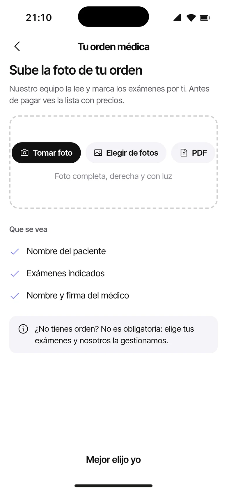
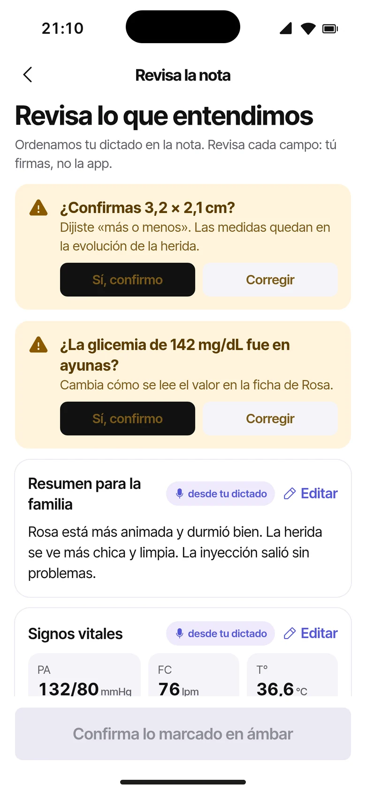

Vitaminas
Enfermeras y TENS a domicilio, exámenes, vitaminas, tu ficha clínica y el reembolso de tu Isapre, en un mismo lugar. Compara, agenda y paga desde el teléfono.
Desde agendar a la enfermera hasta recuperar parte de lo que pagaste. Sin saltar entre apps, llamadas y planillas.
Inyecciones, curaciones, adulto mayor, postrados y turnos.
655 exámenes, con o sin orden. En casa o en un laboratorio cerca.
Con tu receta y una profesional que te acompaña.
Notas, signos vitales e indicaciones de cada visita.
Vincula tu Isapre una vez y enviamos los documentos por ti.
Muy prontoCompara planes con asesores, sin salir de la app.
Muy prontoLos medicamentos de tu tratamiento, en la misma app.
Muy prontoRecorre la app en su versión web.
Sin llamar a nadie ni esperar que te devuelvan el mensaje.
Inyecciones, exámenes, curaciones, vitaminas, turnos y más, cada uno con lo que incluye.

Mira precios, reseñas y horarios. Eliges día y hora, y pagas en la app.

Sigue su llegada, escríbele por chat y recibe el resumen de la visita al terminar.

Cada profesional pone su precio y dice qué incluye. Lo ves antes de agendar.
Intramusculares y subcutáneas, con tu receta.
Toma de muestra en tu casa, con o sin orden.
Vitaminas inyectables e hidratación endovenosa.
Heridas, úlceras y cuidados después de una cirugía.
Acompañamiento, control y cuidados diarios.
Higiene, cambios de posición y cuidados en cama.
Enfermera o TENS por turnos, en tu casa.
Control de signos vitales y apoyo a la familia.
Curaciones, retiro de puntos y control en casa.
Te enseñan a cuidar y a manejar tratamientos en casa.
Motora y respiratoria.
Muy prontoPara tu tratamiento en casa.
Muy prontoLa toma de muestra la hace una profesional en tu casa. La orden médica es opcional: elige tú los exámenes o sube la foto de la orden y los seleccionamos por ti.
Vitaminas y sueros. Vitamina B12, vitamina D e hidratación endovenosa, con tu receta y una profesional que te acompaña. Biomarcadores · muy pronto


Mira los laboratorios de tu zona y agenda con ellos directo en la app: que vayan a tu casa o ir tú a su sucursal, a la hora que te acomode.
Ejemplo ilustrativo: los nombres y distancias no son reales.


Compara enfermeras y TENS cerca de ti: quiénes son, su experiencia, lo que dicen otras familias y cuánto cobran.
Las profesionales dejan notas, curaciones, signos vitales e indicaciones de cuidado. Tú y tu familia las ven en la app.
Tú, tu mamá o tu papá: alergias siempre visibles, diagnósticos, medicamentos y previsión.

Al terminar, la profesional deja el resumen y las señales de alerta.

Presión, glicemia y saturación, medidos en cada visita.

Guarda tu previsión una vez. Después de cada atención descargas en PDF la boleta de honorarios y el detalle de prestaciones, o te los enviamos a tu correo.
Lo que te devuelven depende de tu plan y tu previsión.


Vincula tu Isapre una vez y el agente de Cuidapp envía la boleta, la orden médica y tu carnet por ti después de cada atención.
Sujeto a las condiciones de cada Isapre. El monto del reembolso depende de tu plan de salud.
Cuéntanos qué necesitas y compara planes de distintas Isapres con asesores, sin llamadas en frío ni formularios repetidos.
Las condiciones de cada plan las define cada Isapre. Información general, no constituye asesoría legal ni financiera.
Cuándo conviene una vitamina, qué exámenes hacerte según tu edad o cómo cuidar una curación. Escritas para entender, no reemplazan la indicación de tu médico.


Cuidapp define los servicios. Tú eliges cuáles haces, cuánto cobras, en qué comunas atiendes y en qué horario.
¿Eres kinesiólogo, psicólogo, nutricionista o médico? Postula y te avisamos cuando abramos tu especialidad.


Buscamos farmacias, laboratorios y asesores de Isapre que quieran llegar a pacientes y familias que se cuidan con Cuidapp.
Recibe pedidos de los medicamentos del tratamiento de cada paciente y entrégalos a domicilio.
Aparece en «Laboratorios cerca de ti» y recibe reservas de pacientes, a domicilio o en tu sucursal.
Súmate gratisAparece en «Cotiza tu Isapre» con un plan mensual y responde a quienes piden asesoría.
Con plan mensual“Llegó puntual, le explicó todo a mi mamá y dejó las indicaciones por escrito. Ahora mis hermanos también ven la ficha.”
“Subí la foto de la orden y me marcaron los exámenes. La toma de muestra fue en la casa, antes de ir al trabajo.”
“Elijo mis comunas y mi horario. Dicto la nota al salir de la casa de la paciente y la firmo en un minuto.”
Textos ilustrativos: no corresponden a personas ni opiniones reales.
¿Te quedó una duda? Escríbenos desde la app.
Enfermeras y TENS. Antes de atender revisamos su registro en la Superintendencia de Salud, su identidad y sus antecedentes. En su perfil ves su experiencia, sus servicios y las reseñas de otras familias.
No es obligatoria. Puedes elegir tus exámenes, subir la foto de tu orden para que los seleccionemos por ti, o pedir ayuda para elegir según para qué los necesitas. Para inyecciones y algunos tratamientos sí te pediremos la receta.
Sí. En «Laboratorios cerca de ti» eliges el laboratorio y si quieres que vayan a tu casa o ir tú a su sucursal, y agendas en la app.
Pagas en la app al reservar, con tarjeta. Antes de confirmar ves el precio total y lo que incluye.
Te entregamos la boleta y el detalle de las prestaciones para que lo pidas. Si aplica y cuánto te devuelven depende de tu plan y tu previsión. Esto es información general y no constituye asesoría legal.
Vinculas tu Isapre una vez y el agente de Cuidapp envía la boleta, la orden médica y tu carnet después de cada atención. Está sujeto a las condiciones de cada Isapre y estará disponible muy pronto.
Una forma de comparar planes de distintas Isapres con asesores desde la app. Estará disponible muy pronto. Las condiciones de cada plan las define cada Isapre.
Tú decides quién tiene acceso. Puedes compartirla con tu familia o cuidadores y ver quién la abrió y cuándo.
Partimos en Santiago. Al poner tu dirección ves qué profesionales atienden en tu comuna.
Escríbenos desde la sección Aliados. Los laboratorios se suman gratis y los asesores de Isapre aparecen en «Cotiza tu Isapre» con un plan mensual.
Hoy atienden enfermeras y TENS; kinesiología, psicología, telemedicina y nutrición vienen muy pronto, y ya puedes postular. Postula desde la app: subes tu carnet, una selfie y tu título, y agregas la cuenta donde quieres recibir tus pagos. Luego armas tu perfil con tus servicios, precios, comunas y horario.
Muy pronto en App Store y Google Play. Mientras tanto, puedes recorrer la app en su versión web.